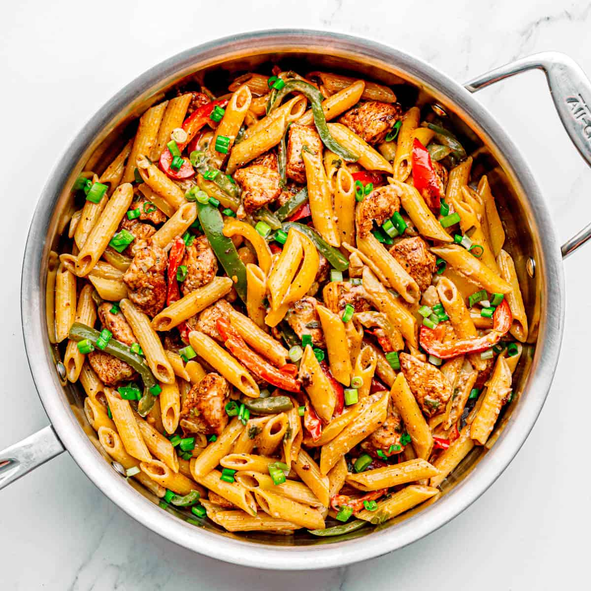

Rasta Pasta

Description:
Rasta pasta is creamy pasta tossed with Caribbean style jerk chicken and sauteed bell peppers. This dish is so full of flavor, and makes a great weeknight dinner that can be made in just half an hour! It’s creamy, rich, spicy, and cheesy.
Ingredients:
- chicken
- bell peppers
- pasta
- green onions
- jerk seasoning
- heavy cream
- parmesan cheese
- garlic
Steps:
- cook the pasta
- season chicken with jerk seasoning
- brown chicken in pan
- slice bell peppers
- mince garlic
- saute peppers and garlic
- meanwhile, cut chicken into pieces
- add heavy cream to pan of peppers and garlic
- simmer until thickened
- add parmesan and stir until melted
- add chicken and pasta into pan and toss